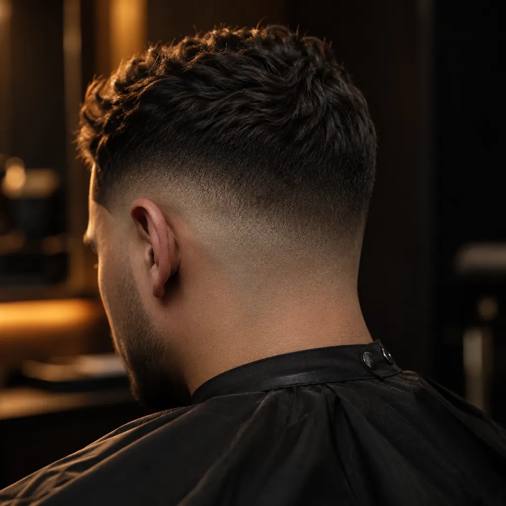
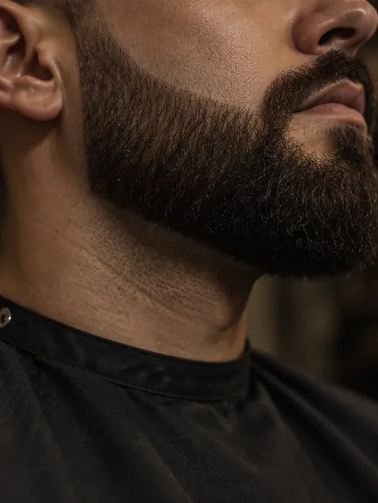
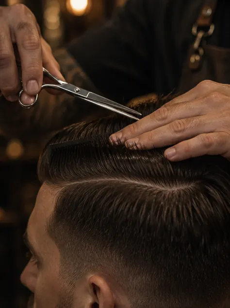
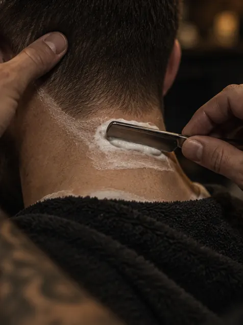
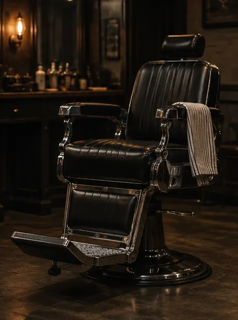
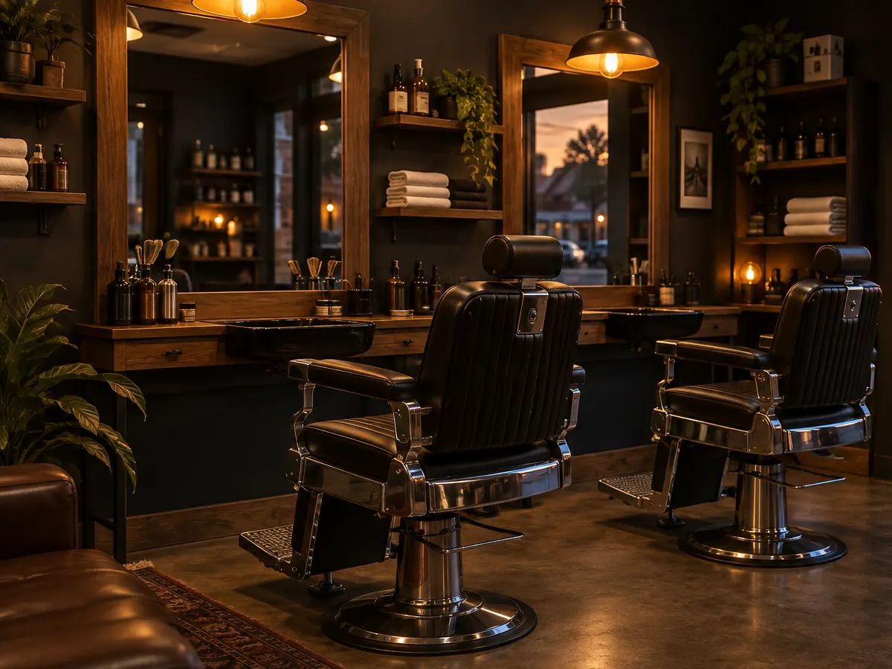

Ofício 22

Barbearia de bairro. Hora marcada, sem fila.
Dois barbeiros, uma cadeira de cada vez. Você marca pelo WhatsApp, chega no horário e senta.
Desde 2022 na Av. Raul Lopes
Serviços e preços
Preço fechado, sem surpresa no fim. O tempo de cada serviço já entra na sua reserva.
Valores de exemplo. [TEXTO DE EXEMPLO]
-
Corte
Tesoura, máquina ou os dois. Lavagem e finalização inclusas.
40 min R$ 45
-
Barba com toalha quente
Toalha quente, navalha e pós-barba.
30 min R$ 35
-
Combo da casa
Corte e barba
Os dois serviços numa cadeira só, com o ritual completo.
70 min R$ 70
-
Pezinho e contorno
Para manter o corte em dia entre uma visita e outra.
15 min R$ 20
-
Sobrancelha na navalha
Só alinha. Ninguém vai notar que você fez.
10 min R$ 15
Marque seu horário
Escolha o serviço, o barbeiro e a hora. A mensagem sai pronta no WhatsApp e a gente confirma por lá.
Prefere conversar antes? Chame no WhatsApp
O ritual
Todo atendimento segue os mesmos três passos. Sem pressa, sem pular nenhum.
-
Recepção
Café ou água enquanto você conta como quer o corte. A gente escuta antes de pegar a tesoura.
-
Toalha quente
Amacia a barba e abre os poros. É o que faz a navalha passar sem irritar.
-
Acabamento
Contorno na navalha, pós-barba e o espelho na sua mão. Só termina quando você aprova.
Quem corta
Seu Raimundo pegou na tesoura aos 16 anos, numa barbearia de esquina no Centro. Foram mais de trinta anos atendendo na cadeira dos outros até abrir a Ofício 22, em 2022, na Raul Lopes.
O 22 é do ano e é das cadeiras: duas cadeiras, dois barbeiros. Quem toca a casa hoje é o Davi, filho dele, que aprendeu o ofício olhando a mão do pai. Do lado, o Tiago, que chegou como aprendiz e ficou.
Seu Raimundo ainda aparece quase todo sábado. Diz que é pelo café.
Tiago
A regra da casa
Hora marcada é hora marcada.
Chegou, sentou. Se atrasar mais de 15 minutos, a gente remarca para não atrasar o próximo.
Galeria
O tipo de corte e de acabamento que sai das nossas cadeiras.
Imagens ilustrativas, geradas por IA.
-

Degradê baixo -

Barba desenhada -

Social na tesoura -

Contorno na navalha -

A cadeira
Horário e endereço
| Terça a sexta | 9h às 20h |
|---|---|
| Sábado | 8h às 18h |
| Domingo e segunda | Fechado |
Horário de exemplo. [TEXTO DE EXEMPLO]
Av. Raul Lopes — Teresina, PIEscolha o horário na comanda e mande pelo WhatsApp. A gente confirma por lá.
Agendar horário